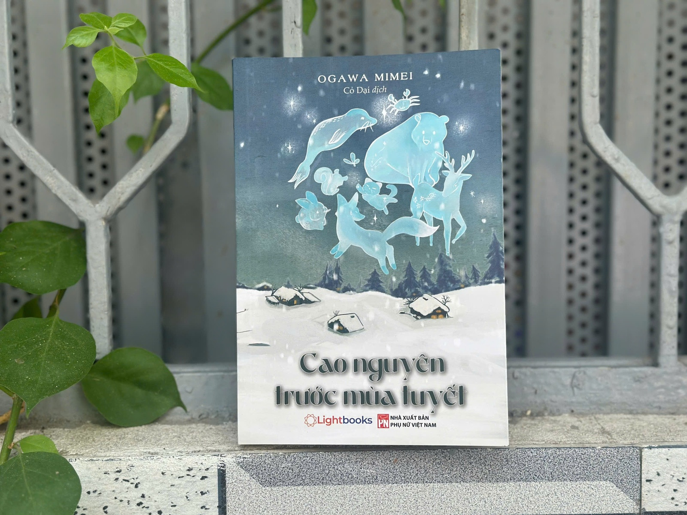
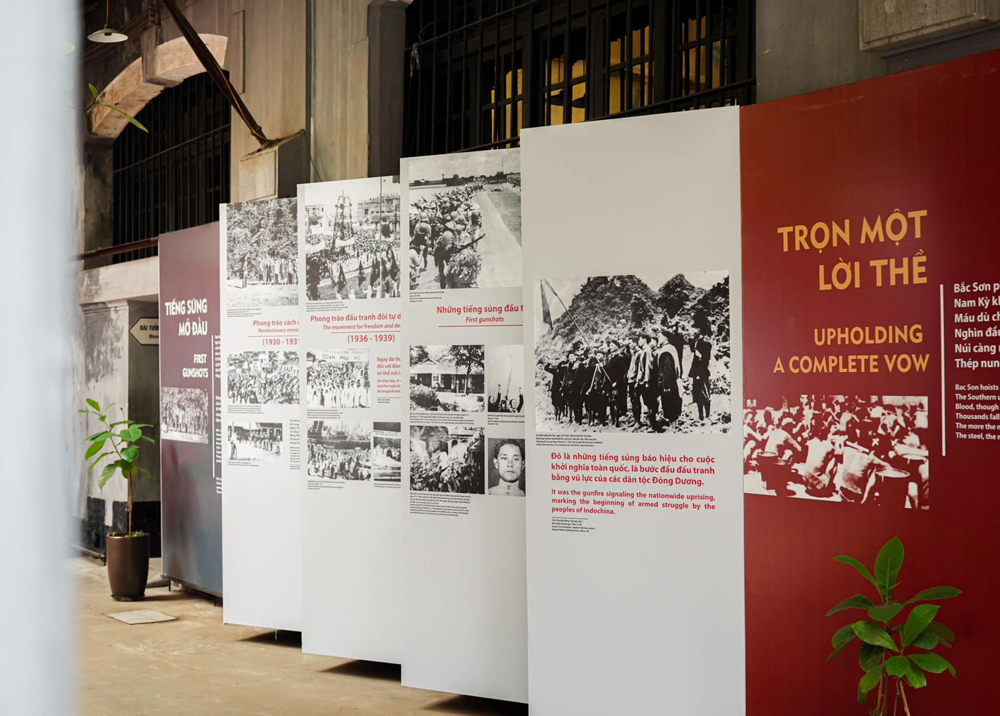
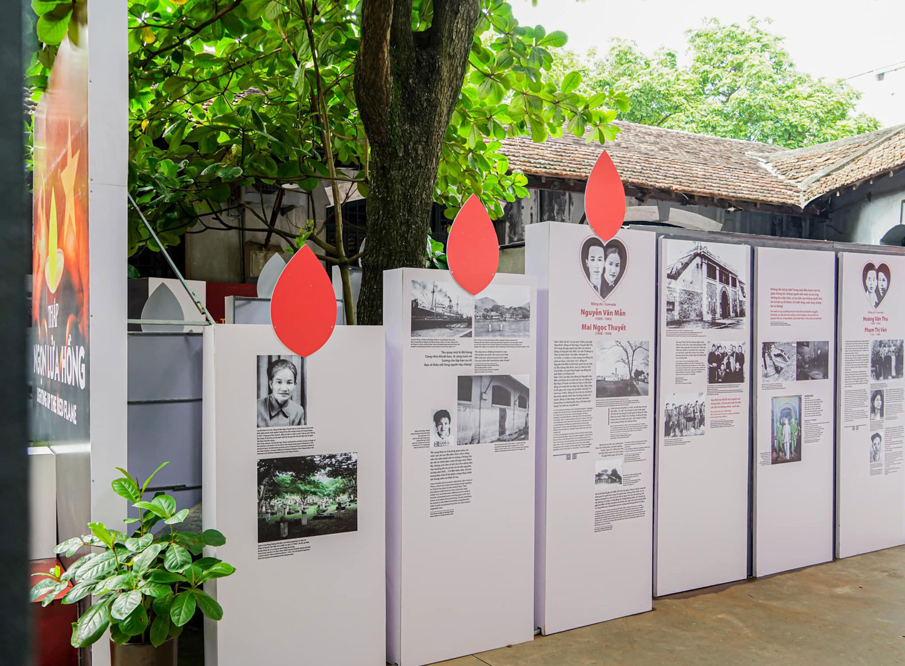
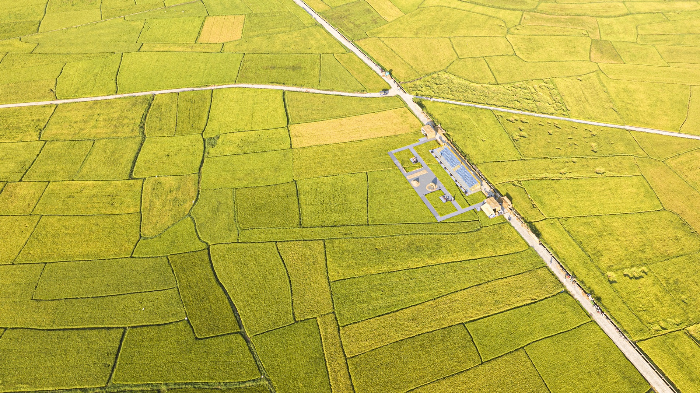
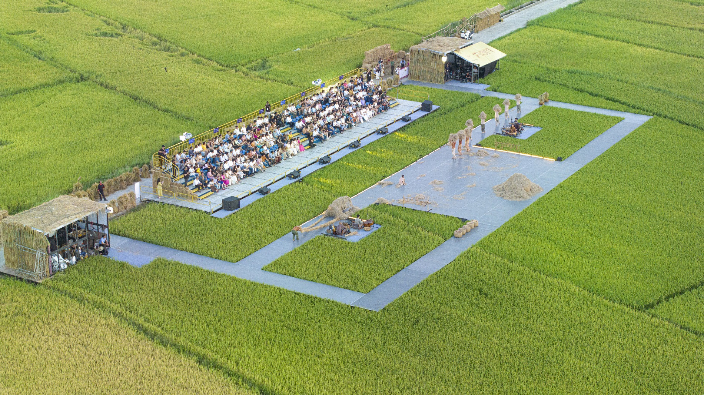
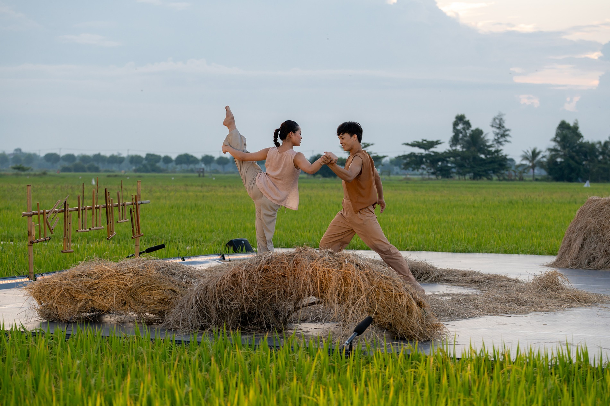
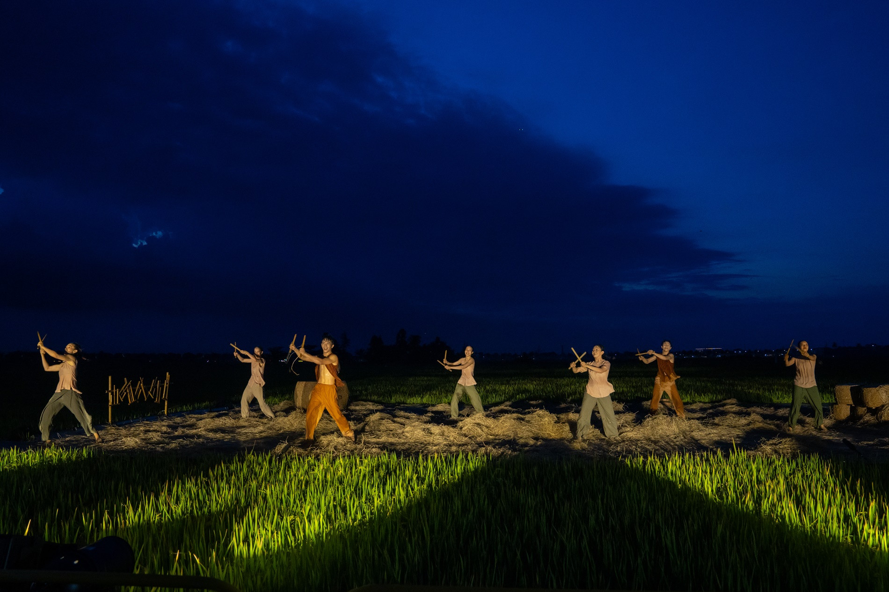
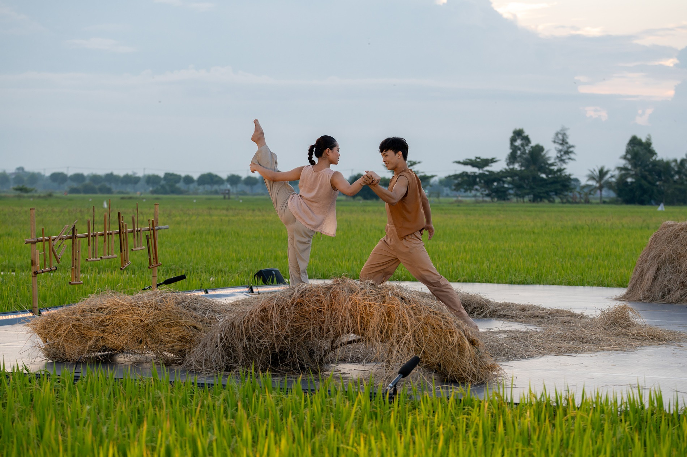
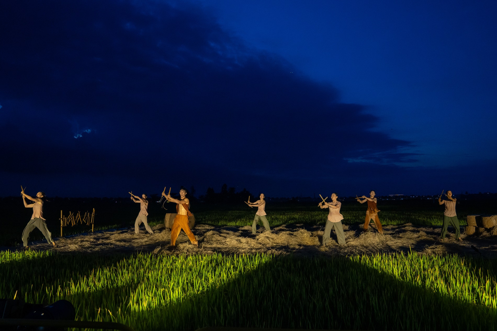

📰Thế giới truyện cổ tích hiện đại trong ‘Cao nguyên trước mùa tuyết’
Ngày xuất bản: 22/09/2024
Chủ đề: Sách
“Cao nguyên trước mùa tuyết” là tuyển tập 23 truyện ngắn đặc sắc của Ogawa Mimei mang phong cách lãng mạn, đầy chất thơ; xen lẫn những truyện có hơi hướng ngụ ngôn mang tính nhân bản sâu sắc hoặc phê phán hiện thực nhẹ nhàng.
Ogawa Mimei - bậc thầy truyện thiếu nhi Nhật Bản - đã khẳng định: “Mỗi đứa trẻ đều mang trong mình một nhà thơ".
Và quả thật, thế giới truyện cổ tích ông tạo nên trong cuốn sách Cao nguyên trước mùa tuyết (NXB Phụ nữ Việt Nam, Lightbooks phát hành) không chỉ dành riêng cho bạn đọc nhỏ tuổi, mà còn lay động hàng triệu con tim bằng sự kết hợp tinh tế giữa hiện thực và kỳ ảo, giữa chất thơ lãng mạn và những triết lý nhân sinh sâu sắc.
Cao nguyên trước mùa tuyết dẫn dắt độc giả phiêu du qua những vùng đất huyền bí, nơi ranh giới giữa thực và ảo mỏng manh như sương khói, để lại dư âm thật khó quên bởi nỗi buồn man mác chảy tràn trên câu từ:
“Hải cẩu mẹ đang cúi mình trên đỉnh tảng băng trôi, ngơ ngác nhìn xung quanh. Nó là một con hải cẩu có trái tim dịu dàng. Bởi chưa quên đứa con thân yêu đã mất tích vào đầu mùa thu của mình, mỗi ngày, nó đều nhìn quanh như thế.
Không biết đứa nhỏ đi đâu rồi... Hôm nay cũng chẳng thấy đâu’
Hải cẩu nghĩ thế. Gió lạnh vẫn không ngừng thổi. Hải cẩu mẹ mất con, nhìn thứ gì cũng thấy thật đau lòng. Nhìn nước biển khi ấy còn xanh mà nay đã hóa thành sắc bạc, nhìn bông tuyết trắng khẽ rơi lên mình, lòng nó lại tràn ngập nỗi đau…” - (trích Vầng trăng và hải cẩu).

Ảnh: Linh Đan
Dòng chảy kỳ ảo trong văn học Nhật Bản tựa như một lạch suối ngầm, lúc ẩn lúc hiện, len lỏi vào từng chi tiết của đời sống. Người cá cô đơn khát khao hạnh phúc nơi trần gian, phản chiếu nỗi niềm sâu thẳm về sự kết nối giữa con người và thiên nhiên. Hình bóng người lữ khách bí ẩn như một ẩn dụ về lòng tốt, đức hy sinh và cả sự hữu hạn của đời người...
Sự hiện diện của yếu tố kỳ ảo không làm lu mờ hiện thực, mà ngược lại càng tô đậm những chi tiết giản dị trong cuộc sống. Ogawa Mimei không sử dụng phép thuật hoa mỹ hay mà tập trung khai thác những bí ẩn chất chứa trong chính nội tâm con người.
Khép lại trang sách, dư âm của Cao nguyên trước mùa tuyết còn đọng lại mãi trong tâm hồn, vẫy gọi chúng ta trở về với vùng đất tuổi thơ, nơi những câu chuyện thần tiên luôn chứa đựng bao điều kỳ diệu.
“Ong nhỏ đang đậu trên lá đỏ, chợt bay lên, đáp xuống cục than đá đang lại gần. Bởi nó đang nghĩ không biết vật thể màu đen, sáng bóng này là gì.
Than mỉm cười, im lặng dõi theo chuyển động của sinh vật nhỏ này. Ong ngửi mùi than và liếm nó bằng cái miệng nhỏ nhắn của mình, cố gắng sử dụng các giác quan nhỏ bé của bản thân để biết nó đến từ đâu. Tuy nhiên, ong vẫn không thể biết được.
Đường ray cũng biết rõ chú ong này. Vì sinh vật nhỏ bé, nhanh nhẹn với đôi cánh xinh đẹp này luôn bay từ bông hoa nọ sang bông hoa kia ở khu vực gần đây…” – (trích Cao nguyên trước mùa tuyết)
Ogawa Mimei (1882-1961) là một tiểu thuyết gia người Nhật nổi tiếng thời tiền chiến. Ông thường được ví von là cha đẻ của văn học thiếu nhi hiện đại hay "Andersen của Nhật Bản". Mimei bắt đầu viết tiểu thuyết từ khi còn rất trẻ nhưng đến năm 1926, ông mới chuyển hẳn sang lĩnh vực sáng tác cho trẻ em.
Lúc sinh thời, Mimei đã sáng tác hơn 1.200 truyện cổ tích, chứng tỏ bút lực dồi dào và trí tưởng tượng bay bổng. Những sáng tác dành cho độc giả nhí của ông được mô tả là "văn học thiếu nhi không phân biệt" - nghĩa là Ogawa Mimei chưa từng có ý định tách biệt tác phẩm của mình khỏi dòng chảy văn học chung của nhân loại.
📰Xúc động hình ảnh trưng bày 'Thắp ngọn lửa hồng' tại Nhà tù Hoả Lò
Thứ Ba, 09/07/2024 - 15:39
Chủ đề: Di sản
Nhiều hình ảnh, tư liệu về quá trình đấu tranh cách mạng của dân tộc Việt Nam trong trưng bày "Thắp ngọn lửa hồng" tại Nhà tù Hoả Lò khiến người xem xúc động.
Hướng tới kỷ niệm 77 năm Ngày Thương binh - Liệt sĩ (27/7/1947 - 27/7/2024), sáng 9/7, Ban Quản lý di tích Nhà tù Hỏa Lò tổ chức khai mạc trưng bày Thắp ngọn lửa hồng gồm 3 nội dung chính: Tiếng súng mở đầu, Trọn một lời thề và Dấu xưa vang mãi.

Những ký ức không bao giờ quên ùa về trong tâm trí của nhiều cựu tù Hỏa Lò có mặt tại trưng bày
Phần Tiếng súng mở đầu trưng bày các tư liệu, hình ảnh về những phong trào cách mạng của Việt Nam như: Xô Viết Nghệ Tĩnh (1930-1931), phong trào đấu tranh đòi tự do dân chủ (1936-1939), Khởi nghĩa Bắc Sơn (9/1940), Khởi nghĩa Nam Kỳ (11/1940), Binh biến Đô Lương (1/1941).
Phần Trọn một lời thề giới thiệu thân thế, sự nghiệp của lãnh đạo Đảng và Nhà nước, luôn một lòng vì Tổ quốc. Dù bị tra tấn, đày ải trong lao tù, những người con ưu tú vẫn giữ mãi ngọn lửa nhiệt huyết, tinh thần đấu tranh kiên cường. Ở nơi trường bắn, họ vẫn hiên ngang, bất khuất.

Trưng bày khiến người xem xúc động
Phần Dấu xưa vang mãi trưng bày hình ảnh các địa danh lịch sử, nơi kẻ địch từng dựng trường bắn và nhà lưu niệm tưởng nhớ những người con ưu tú của Đảng, giờ đã thành “địa chỉ đỏ”, góp phần giáo dục truyền thống cách mạng cho nhiều thế hệ. Nhiệt huyết cách mạng, khí phách hiên ngang của những người chiến sĩ vẫn âm vang qua lời nói, câu thơ và còn nguyên giá trị cho đến ngày nay.
 Hoạt cảnh tái hiện cuộc gặp cuối cùng của gia đình đảng viên xuất sắc Mai Ngọc Thuyết và Nguyễn Văn
Hoạt cảnh tái hiện cuộc gặp cuối cùng của gia đình đảng viên xuất sắc Mai Ngọc Thuyết và Nguyễn Văn
Tại trưng bày, du khách được xem hoạt cảnh tái hiện cuộc gặp gỡ cuối cùng trong Nhà tù Hỏa Lò năm 1933 của gia đình đảng viên xuất sắc Mai Ngọc Thuyết và Nguyễn Văn Mẫn. Sau đó, đồng chí Nguyễn Văn Mẫn bị lưu đày đi Nhà tù Côn Đảo và hy sinh năm 1943.
Trưng bày diễn ra đến ngày 15/8 tại Di tích lịch sử Nhà tù Hỏa Lò.
Ảnh: BTC
📰Rơm và cánh đồng lúa chín vào múa đương đại
Thứ Sáu, 23/08/2024 - 15:34
Chủ đề: UNESCO
Lần đầu tiên, một vở múa đương đại được tổ chức giữa cánh đồng lúa chín ở Hội An (Quảng Nam), khiến du khách trầm trồ đến ngỡ ngàng với cảnh sắc làng quê và cảm nhận đầy đủ hương vị, không khí của mùa gặt.
Từ ngày 22 - 25/8, TP Hội An phối hợp cùng Arabesque Vietnam tổ chức vở diễn Rơm trên cánh đồng lúa chín Trái tim lúa Hội An (khối Trường Lệ, phường Cẩm Châu).
Đây là lần đầu tiên du khách được thưởng thức trình diễn nghệ thuật múa đương đại trên cánh đồng bát ngát, nơi ánh hoàng hôn tắm đẫm phong cảnh trong một sắc vàng ấm áp.
Vở diễn Rơm tôn vinh vẻ đẹp bình dị, hiền hòa của làng quê Hội An vào mùa gặt hái, thông qua âm nhạc dân gian kết hợp cùng nghệ thuật múa đương đại đẳng cấp quốc tế dưới bàn tay dàn dựng của đạo diễn, giám đốc nghệ thuật Nguyễn Tấn Lộc và giám đốc âm nhạc Đức Trí.
Với lòng yêu mến Hội An cùng kinh nghiệm biên đạo đẳng cấp quốc tế, biên đạo Nguyễn Tấn Lộc đã mang đến một sản phẩm văn hóa - du lịch đặc trưng cho làng quê Hội An.
Rơm còn là nỗ lực của UBND TP Hội An nhằm xây dựng và phát triển Hội An theo định hướng thành phố sinh thái - văn hóa - du lịch, theo đó chú trọng việc phát huy và sáng tạo các tiềm năng, lợi thế sẵn có, đặc biệt là trong lĩnh vực văn hóa - nghệ thuật nhằm khẳng định và phát huy danh hiệu Hội An - thành phố sáng tạo của UNESCO.
Một số hình ảnh về vở diễn “Rơm” trong lễ ra mắt:

Biểu diễn “Rơm" trên nền phong cảnh là cánh đồng lúa chín vào mùa gặt, Arabesque lần đầu tiên giới thiệu hình thức kết hợp giữa nghệ thuật múa đương đại và thiên nhiên (ambiance dance) đến với Hội An

Trên nền cảnh cánh đồng lúa bát ngát những ngày tháng tám, vở diễn tôn vinh vẻ đẹp thanh bình, hiền hòa của làng quê mùa gặt
 Với chất liệu rơm, kết hợp nghệ thuật múa đương đại, trống, nhạc cụ dân tộc, nhạc công biểu diễn trực tiếp cùng diễn viên múa, "Rơm" có thời lượng 60 phút, được tổ chức vào thời điểm lúc mặt trời vừa lặn

“Rơm” kể về tình cảm bình dị và chân chất của gia đình nông dân Việt Nam

Ambiance dance vốn là hình thức biểu diễn kết hợp ngôn ngữ múa với không gian ngoài trời, âm thanh, bối cảnh... rất phổ biến trên thế giới, đặc biệt ở các thành phố văn hóa và du lịch
Với chất liệu rơm, kết hợp nghệ thuật múa đương đại, trống, nhạc cụ dân tộc, nhạc công biểu diễn trực tiếp cùng diễn viên múa, "Rơm" có thời lượng 60 phút, được tổ chức vào thời điểm lúc mặt trời vừa lặn

“Rơm” kể về tình cảm bình dị và chân chất của gia đình nông dân Việt Nam

Ambiance dance vốn là hình thức biểu diễn kết hợp ngôn ngữ múa với không gian ngoài trời, âm thanh, bối cảnh... rất phổ biến trên thế giới, đặc biệt ở các thành phố văn hóa và du lịch